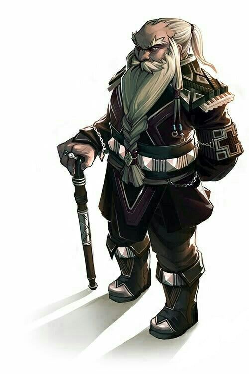
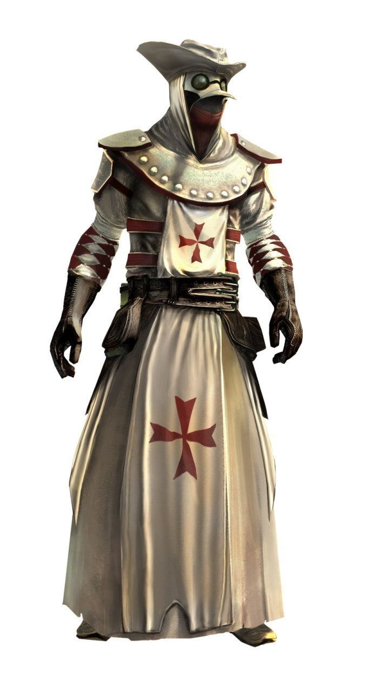
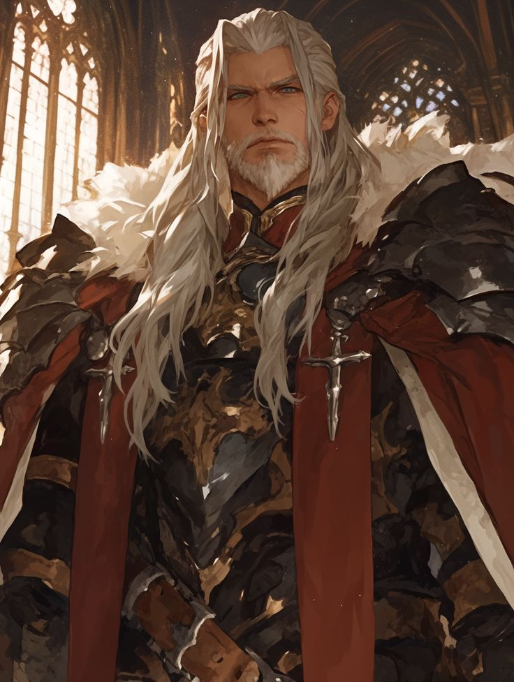
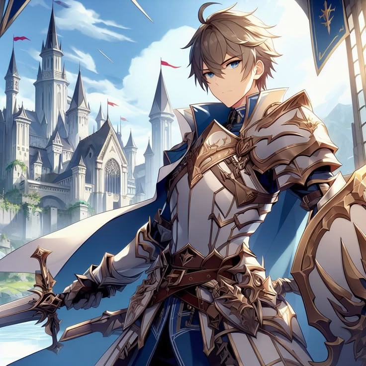
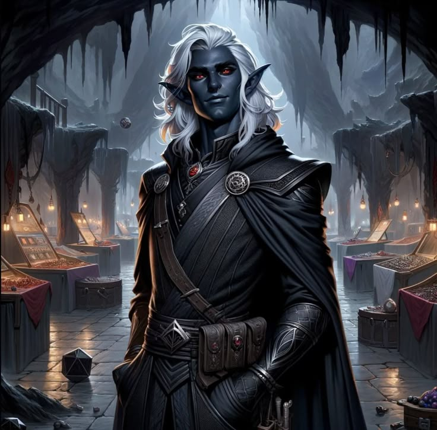
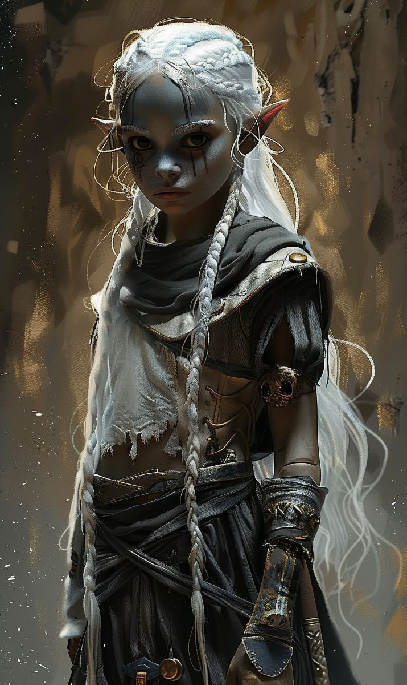
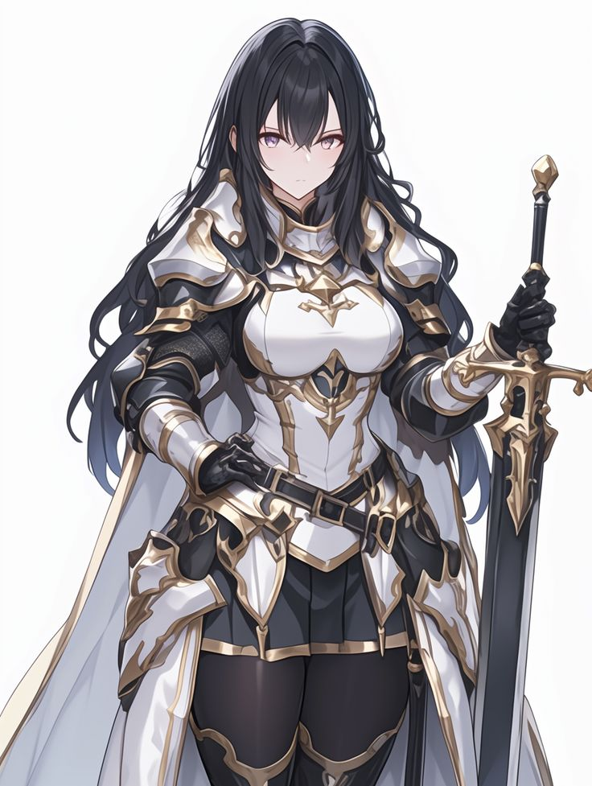
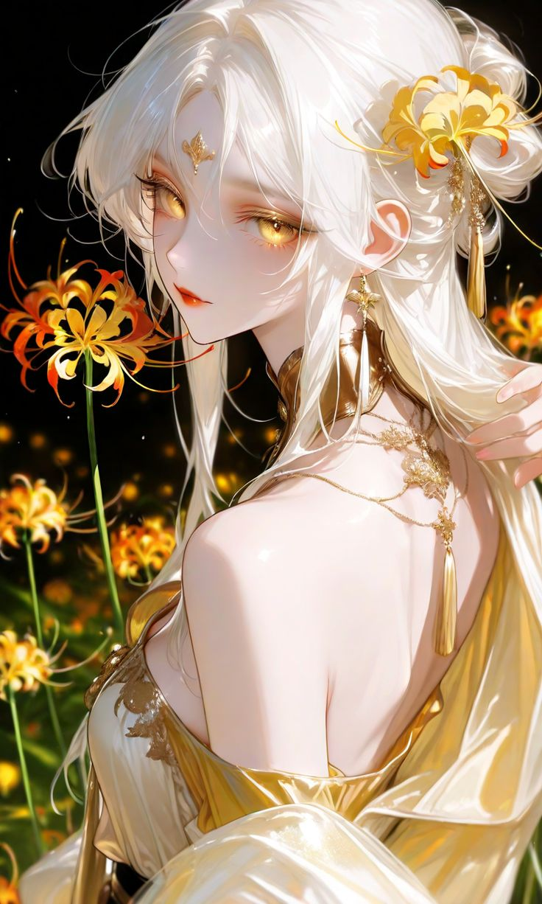
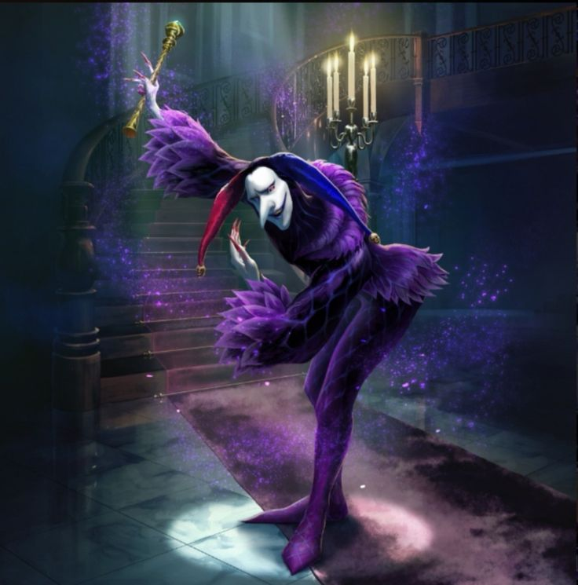
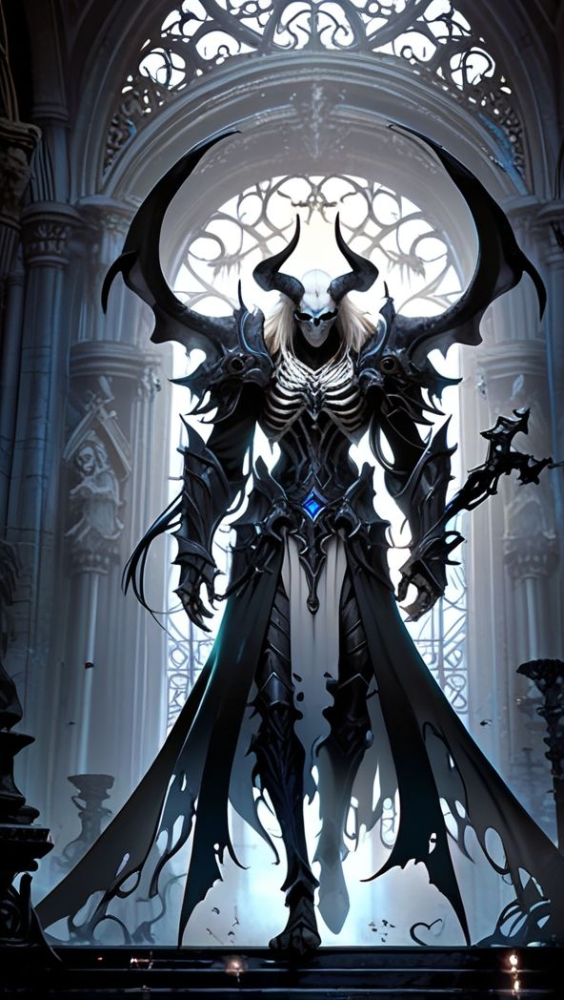

Lunaris
Mogrim Hammerstone
Imagen

Descripción
Segundo hijo de la familia real de los Enanos de Verdant, Mogrim creció bajo la sombra de su hermano mayor, destinado al trono. Eligió el camino del guerrero y se destacó como comandante durante la Primera Guerra del Dragón. Al terminar el conflicto, abandonó la vida militar para dedicarse a la investigación de lo oculto. Viajó incansablemente por el mundo, explorando fenómenos ligados a las Cuatro Dimensiones: Feywild, Deadwall, Infernalside y Celestialplace. Su conocimiento y experiencias lo convirtieron en una figura de sabiduría venerada, siendo uno de los fundadores intelectuales de Lunaris. Mogrim falleció años después debido a un problema cardíaco que se le había manifestado de forma anticipada durante sus expediciones. Su muerte fue tranquila, rodeado de sus manuscritos y artefactos, dejando un legado eterno en la ciudad de Lunaris, en un entierro vikingo con los maximos honores de la ciudad que fundo.
El Doctor
Imagen

Descripción
Enigmático curandero que se mudó a la ciudad de Lunaris, donde rápidamente ganó notoriedad por sus vastos conocimientos sobre humanoides, medicina casera y el tratamiento de enfermedades que ni la magia podía curar. Siempre reservado y con un aire distante, atendía sin pedir nada a cambio, y pronto fue considerado indispensable para los cuarteles y las guardias de la ciudad.
Lord Garrick Valemont
Imagen

Descripción
Antiguo Gran Señor Supremo de los ejércitos de Lunaris, Lord Garrick fue una figura imponente y estratégica, forjada en el ideal del deber absoluto. Hijo del fundador de la fuerza militar de la ciudad, heredó un legado construido sobre el honor, la disciplina y la integración de razas y estilos de combate, algo que convirtió al ejército de Lunaris en un ejemplo de diversidad táctica en todo el continente. Durante el asedio final de la ciudad, Garrick cayó en combate liderando a sus hombres hasta el último aliento, negándose a retroceder. Su sentido del deber fue tan profundo que, en vida, ejerció una presión constante sobre su hijo Cedric, a quien entrenó y exigió sin tregua. Quería que fuese digno no solo de él, sino del abuelo fundador del linaje Valemont. Su muerte dejó un vacío en la cadena de mando y una sombra pesada sobre los hombros de su heredero.
Cedric Valemont
Imagen

Descripción
Hijo de Lord Garrick Valemont y heredero de una de las líneas militares más respetadas de Lunaris, Cedric vivió toda su vida a la sombra de sus antecesores. Aunque su padre lo respetaba, nunca fue por méritos propios, sino por el linaje que cargaba. Esa falta de reconocimiento lo impulsó a entrenar incansablemente, convirtiéndose en un soldado excepcional y un guerrero formidable, aunque internamente quebrado por la necesidad de aprobación. Durante la invasión de Lunaris, fue uno de los pocos que logró escapar, liderando a un pequeño grupo de soldados y civiles que aún hoy mantienen vivo el espíritu y la memoria de la ciudad caída. Su valentía en la retirada y su compromiso con los supervivientes le valieron, finalmente, el reconocimiento que buscó toda su vida. Su padre, junto con los guerreros caídos, lo consagró como digno del legado Valemont. Desde el Dead-wall, su linaje lo bendice, y él se mantiene como un símbolo de esperanza y resistencia.
Goldwood
Thalendir Leafwarden
Imagen
Descripción
Capitán forestal y antiguo protector de los bosques de Ban Irro, Thalendir fue designado embajador en la ciudad de Goldwood para representar los intereses del equilibrio natural. De origen drow mezclado, proveniente de la ciudad minera de Kiikuzen, siempre se sintió ajeno a las grandes urbes y desconfiaba profundamente del poderío militar de Lunaris, ciudad que a su juicio imponía miedo más que respeto. Su miedo silencioso se convirtió en estrategia: en las sombras, selló alianzas con el Ejército del Dragón, buscando que estos se asentaran en el continente para ejercer presión sobre las demás ciudades y fracturar la balanza de poder que tanto favorecía a Lunaris. Thalendir fue finalmente descubierto conspirando contra la Alianza de las Tres Ciudades, y actualmente cumple condena en Ban Irro, su propio pueblo. Aunque su traición causó escándalo, algunos aún creen que sus intenciones estaban orientadas a preservar el equilibrio... solo que eligió el lado equivocado.
Grumbek Coindelver
Imagen
Descripción
Enano originario de la ciudad de Verdant, Grumbek Coindelver fue enviado como embajador a Goldwood para representar los intereses comerciales de su pueblo. Astuto, elocuente y con una mente aguda para los negocios, pronto se ganó un lugar en el consejo gracias a su habilidad para mantener los mercados en auge y establecer rutas de comercio con múltiples ciudades. Sin embargo, su simpatía y cordialidad ocultan un rencor profundo: desconfía abiertamente del pueblo élfico, a quienes culpa por una traición ancestral que marcó a la sociedad enana con sangre y pérdidas. Aunque existe una tregua formal entre ambos pueblos, Grumbek la considera una fachada hipócrita. En secreto, conspira cuidadosamente para debilitar la influencia de los elfos, guiando decisiones que los aíslen políticamente o los enfrenten con otros miembros del consejo. Su objetivo no es declarar la guerra... sino que otros lo hagan por él.
Harven Duskrow
Imagen
Descripción
Conocido en Goldwood por su dominio sobre los recursos estratégicos del continente, Harven Duskrow es el encargado de gestionar las rutas de pesca, minería y extracción de materiales esenciales para el desarrollo de la ciudad. Hombre de carácter firme y mirada calculadora, su voz tiene peso en el consejo, especialmente cuando se trata de decisiones económicas o de seguridad territorial. Aunque muchos lo ven simplemente como un administrador eficiente y pragmático, Harven arrastra un pasado marcado por la decepción: en su juventud, fracasó en ser admitido en la Academia de la Alta Hechicería, lo que lo llevó a profundizar sus estudios por cuenta propia, enfocándose en historia antigua, símbolos dracónicos y arcanismos olvidados.
Mariel Stormbrew
Imagen
Descripción
Carismática, alegre y con una lengua tan afilada como su paladar, Mariel Stormbrew es la responsable de abastecer a Goldwood con las mejores bebidas del continente. Dueña de viñedos, tabernas y bodegas en distintas regiones, su comercio fluido y su talento para la organización de festividades la han convertido en una figura imprescindible tanto en el ámbito económico como en el cultural. Representa en el consejo la voz del pueblo y su necesidad de unión, tradición y celebración. Bajo su supervisión, cada evento de Goldwood es una mezcla perfecta de embriaguez y diplomacia, donde los acuerdos más importantes muchas veces se cierran con una copa en la mano y una sonrisa en los labios.
Aleriant Valherion
Imagen
Descripción
Aleriant Valherion es un antiguo dragón de bronce que combate desde las sombras el regreso del Ejército del Dragón. Aunque su forma verdadera permanece oculta al mundo, los aventureros —y especialmente su hija adoptiva, Elaria— conocen su naturaleza y el juramento que lo liga a Bahamut: proteger a los inocentes sin dejarse consumir por la ira. Participó en la defensa de Lunaris, donde enfrentó al dragón rojo que lideraba la invasión. Desde entonces, actúa como un guía silencioso en las decisiones de las alianzas, y un tutor riguroso para Elaria, a quien entrena para que nunca sufra el mismo destino que él. En el pasado, Aleriant desobedeció su deber sagrado al dejarse llevar por la furia contra los cromáticos, lo que le costó la vida de muchos inocentes en la ciudad metálica de Sangmo. Carga con esa culpa cada día, y por eso es implacable consigo mismo y con quienes ama. En Elaria ve la esperanza de hacer las cosas bien esta vez... y una conexión con los pocos amigos que una vez tuvo y perdió.
Elaria Holysun
Imagen
Descripción
Elaria fue criada en soledad, bajo la protección de un padre exigente y un secreto demasiado grande para su edad. Creció sin amigos, sin libertad, y sin permiso para utilizar la fuerza que ardía en su interior. Todo cambió cuando conoció a un grupo de aventureros y, por primera vez, vio una oportunidad de escapar. Se unió a ellos en busca de libertad, hasta que fue encontrada por su padre —Aleriant— quien la reprendió duramente en un momento que aún hoy provoca risas entre quienes lo presenciaron. Aunque Aleriant la ama profundamente, se niega a permitir que Elaria enfrente al Ejército del Dragón. La sobreprotege, cargando con sus propios errores del pasado. Sin embargo, Elaria no se quedó de brazos cruzados: cuando un incendio amenazó el bosque de Kazaroko, ayudó a apagarlo y algunos pocos testigos vieron la inmensidad de su verdadero poder... Ahora, el Ejército del Dragón la busca incansablemente. ¿Por qué? Ni siquiera ella lo sabe. Pero algo dentro suyo —una energía, una conexión— grita que su destino está atado a un conflicto mucho más profundo de lo que imagina.
Jestella
Roland Thorne
Imagen
Descripción
Capitán del fuerte de Jestella, Roland Thorne es un veterano estratega que ha servido por décadas en la frontera. Aunque ha oído incontables historias sobre el temido Ejército del Dragón, nunca ha presenciado su paso ni sus horrores con sus propios ojos. Esta falta de evidencia directa lo ha vuelto escéptico, y muchos en la guarnición saben que cuestiona los informes que circulan por las ciudades aliadas. Aun así, su sentido del deber es inquebrantable, y mantiene la disciplina del fuerte con mano firme, resguardando la estabilidad de Jestella y la seguridad de la Triple Frontera.
Marcus Halwen
Imagen
Descripción
Soldado firme y de valores sólidos, Marcus Halwen es uno de los pilares de la guarnición de Jestella. Fue quien ayudó a los aventureros y a Cedric Valemont cuando llegaron a la ciudad tras la caída de Lunaris, ofreciéndoles asistencia en nombre del pueblo de Jestella. Aunque nunca pisó Lunaris, su compromiso con la defensa del equilibrio entre razas lo ha hecho destacar entre sus compañeros. Conoce de cerca las tensiones que recorren la Triple Frontera, y cree que la cooperación entre humanos, elfos y enanos es esencial para resistir los tiempos oscuros que se avecinan.
NE.RA
Imagen
Descripción
NERA es una niña con rasgos dracónicos marcados por el fuego, piel cálida al tacto y ojos que parecen brasas encendidas. Fue el primer intento fallido del Revolucionario por dividir el alma de Tiamat, creando un ser híbrido entre humana y dragón rojo. Criada como experimento y herramienta, nunca conoció otra figura que no fuera él, a quien llama “padre” con una mezcla de amor, terror y obediencia ciega. El Revolucionario la sometió a mutaciones dolorosas, implantando partes dracónicas directamente en su cuerpo. Cada “mejora” venía con pruebas, castigos y aislamiento. NERA tiene miedo de todo lo que desconoce, pero es especialmente peligrosa cuando se activa su instinto de defensa. Aunque parece una niña de 9 años, su poder latente es inmenso, desproporcionado, inestable. Actualmente se encuentra bajo vigilancia estricta luego de haber sido encontrada inconsciente tras un estallido mágico fuera de control. No es malvada... solo rota. Su sola existencia es prueba del horror que el Revolucionario estuvo dispuesto a crear. Algunos la ven con lástima, otros con temor. Pero nadie se atreve a decirle que merece una segunda oportunidad. Actualmente esta perdida porque escapo por miedo.
Ejército del Dragón
Kaelira Varnys
Imagen
Descripción
Dragona blanca de la Legión de Escamas Blancas, Kaelira Varnys sirve como teniente del Ejército del Dragón. Originaria de Broken Tusk, creció en un entorno de fervor militar liderado por El Líder, una figura carismática y radical que unificó a los jóvenes dragones bajo una causa expansionista. La invasión a Lunaris fue el primer paso de ese plan, una demostración brutal de que el mundo podía ser reclamado por la fuerza. Kaelira nunca ocultó su identidad ni su rol como invasora. Como mensajera de su legión, fue testigo del sufrimiento de ambos bandos, y comenzó a cuestionar la legitimidad de una guerra que dejaba a tantos inocentes en el camino. Su contacto con los aventureros, quienes llegaron a respetarla pese a su origen, encendió en ella una chispa de duda... y esperanza. Durante el conflicto en Jestella, Kaelira fue capturada por el Revolucionario disfrazado de doctor. Le inyectaron un veneno en la espina lumbar, quitándole su forma de dragona y obligándola a una larga rehabilitación. Aun así, lo dio todo por evitar más bajas entre sus tropas, compuestas en su mayoría por dragones jóvenes. Como símbolo de su sacrificio y su deseo de reconciliación, Kaelira ha sido nombrada representante de la delegación de escamas blancas en la mesa de embajadores organizada por Rudwin. Aunque marcada por el dolor, ahora lucha por un futuro en el que la diplomacia triunfe sobre la guerra.
Kungo
Elorathian Vey'larin
Imagen
Descripción
Inventor élfico originario de Kungo, Elorathian Vey'larin es reconocido por su brillantez en la creación de artefactos mecánicos y soluciones tecnológicas avanzadas. Durante la Primera Guerra del Dragón, muchos de sus diseños fueron utilizados con fines bélicos, lo que culminó en una tragedia personal y colectiva: el sometimiento de su pueblo y la esclavización de numerosas comunidades élficas. Marcado por la culpa, Elorathian hizo un juramento sagrado: nunca más volvería a crear máquinas para la guerra. Desde entonces, se dedica exclusivamente al desarrollo de invenciones civiles, como sistemas de irrigación, herramientas de construcción y mecanismos de ayuda para los necesitados.
Theos
Borin Hojaroca
Imagen
Descripción
Borin Hojaroca es un enano veterano de Theos, una ciudad enclavada en las montañas donde la tradición lo es todo. Como líder del clan Hojaroca, supervisa el ancestral ritual del Hipogrifo Blanco Albino, una ceremonia de caza sagrada que marca el paso a la adultez de los jóvenes cazadores. Borin es estricto, honorable y profundamente respetado entre su gente. Su palabra pesa como una roca, y su sentido del deber hacia la montaña y los espíritus de la caza guía cada una de sus decisiones.
Enderlin Village
Bran Ironhook
Imagen
Descripción
Bran Ironhook es un ingeniero enano responsable del mantenimiento de la gran represa que alimenta las forjas de Theos y protege la entrada a las legendarias Towering Tomb. De voz ronca y manos manchadas de aceite, Bran cuida con devoción las antiguas máquinas de guerra que aún duermen bajo su vigilancia. Últimamente, ha notado un aumento inusual en la actividad de criaturas extrañas cerca de las compuertas, algo que lo tiene en constante alerta. Gracias a la ayuda del grupo de aventureros, logró reparar los daños más graves de la represa, aunque advierte que algo se agita en lo profundo. No le teme a las fallas mecánicas, pero sí a los silencios prolongados bajo tierra.
Verdant City
Bran Ironhook
Imagen
Descripción
Durak Hammerstone es el actual rey de Verdant City y hermano del legendario Mogrim. A diferencia de su hermano guerrero, Durak eligió el camino del liderazgo y la diplomacia, forjado en la presión de un reino sitiado por la sombra del Ejército del Dragón. Sabio, firme y con una visión clara, Durak lucha por proteger a su pueblo y restaurar la paz en su territorio. Cree en la unidad entre los clanes enanos y busca alianzas con otras razas para resistir el avance enemigo. Aunque carga con el peso de decisiones difíciles, su determinación ha convertido a Verdant en un símbolo de esperanza para los pueblos libres.
Brunilde LA FURIOSA
Imagen
Descripción
Brunilde era solo una enana más entre los escombros de su aldea cuando el Ejército del Dragón arrasó su tierra. Su pueblo fue destruido, su gente masacrada, y Verdant City —donde buscó ayuda— ya había bajado las armas. El rey no respondería. Nadie lo haría. Entonces, sin esperar órdenes, tomó un escudo. Con lo poco que quedaba, lideró una resistencia suicida. Un puñado de sobrevivientes, un montón de rabia, y un escudo bastaron. Contra todo pronóstico, resistieron. Ganaron. Su furia se volvió leyenda. Hoy, Brunilde es la Gran General de la Alianza, símbolo de coraje e insubordinación. Sin embargo, su alma no ha sanado. Durante la guerra, permitió que el doctor realizara un experimento atroz sobre una dragona que los ayudó, buscando extraer información vital. Fue su decisión. Suya y de nadie más. Desde entonces, vive con el peso de esa elección. Se ve a sí misma como un monstruo, no muy distinto a los que juró destruir. Su rabia ya no es solo fuego… es penitencia. Y aunque lucha por todos los pueblos libres, lo hace con el dolor de quien ya no cree merecer la redención. Brunilde protege. Pero ya no se protege a sí misma.
Mikabe
Sandris Lunemor
Imagen
Descripción
Jefa forestal de Mikabe, Sandris Lunemor es una líder firme y respetada, dedicada a la protección del bosque y sus habitantes. Desde muy joven, ha estado fascinada con el Feywild, la dimensión mágica de la naturaleza salvaje, y muchos dicen que su conexión con ese plano ha influido en su sensibilidad hacia el equilibrio natural y su capacidad para comunicarse con criaturas del bosque. Cuando la Legión de Escamas Verdes del Ejército del Dragón intentó arrasar parte del territorio, Sandris encabezó la defensa con valentía, enfrentándose personalmente al teniente enemigo. Los aventureros fueron clave en esa contienda, y su colaboración permitió repeler la invasión. Desde entonces, Sandris siente una profunda gratitud hacia ellos, especialmente hacia Elaria, quien logró apagar el incendio provocado por los invasores y evitar una catástrofe ecológica. Tras el conflicto, Sandris ofreció su testimonio en el juicio contra un traidor vinculado a la invasión y colaboró activamente brindando informes detallados a las fuerzas aliadas. Su conexión con el Feywild y su incansable compromiso con la causa la convierten en una figura de sabiduría y esperanza para Mikabe y sus bosques encantados.
Kiikuzen
Tormir
Imagen

Descripción
Tormir fue un veterano minero de Kiikuzen, conocido por su fuerza incansable y su devoción hacia su familia. Su vida cambió trágicamente cuando su hija murió a causa de una peste que asolaba el pueblo. Devastado, Tormir dedicó sus últimos días a descubrir el origen de la enfermedad que había arrebatado a tantos. Su búsqueda lo llevó a las profundidades de las minas, donde descubrió la verdad: el Ejército del Dragón había estado arrojando cadáveres alterados mágicamente a los ríos subterráneos. Estos cuerpos, usados para experimentos, contenían una mezcla peligrosa de magia y organismos inestables, lo que dio origen a una peste negra que contaminó el agua y mató a muchos. En un acto final de coraje, Tormir nadó hasta el dique de cuerpos podridos y activó manualmente los explosivos que destruirían la fuente del mal. Murió en la explosión, sabiendo que al hacerlo no solo liberaba al pueblo, sino que se reuniría finalmente con su hija. Su sacrificio quedó grabado como un acto de heroísmo en la memoria de Kiikuzen.
Rera
Imagen

Descripción
Rera es una niña drow del pueblo de Kiikuzen. A pesar de su corta edad, demostró una madurez y ternura excepcionales durante los peores días de la peste. Mientras sus padres estaban enfermos, Rera los cuidaba con lo poco que tenía, buscando comida, limpiando sus heridas y ofreciendo ayuda a los aventureros que llegaban a la ciudad. Su dulzura y fortaleza dejaron una huella en quienes la conocieron, y muchos la recuerdan como el corazón latiente de Kiikuzen durante los tiempos oscuros. Aunque pequeña, su compasión fue un faro de esperanza para todos los que luchaban por sobrevivir.
Ban Irro
Lythariel Nymariel
Imagen
Descripción
Princesa de Ban Irro y descendiente directa de uno de los linajes élficos más antiguos del continente, Lythariel Nymariel lleva sobre sus hombros el peso de evitar que su pueblo repita los errores del pasado. Profundamente marcada por las cicatrices históricas de la Primera Guerra del Dragón, ha dedicado su vida a la diplomacia, la protección de los bosques y la defensa de la paz. Consciente del riesgo creciente que representa la reaparición del Ejército del Dragón, Lythariel actuó con determinación: solicitó la intervención de la Escuela de la Alta Hechicería para fortalecer las defensas de la región y sellar posibles grietas mágicas. Además, fue ella quien condenó públicamente a Thalendir Leafwarden, el embajador que conspiró en secreto con los invasores, ordenando su arresto y encarcelamiento como símbolo del compromiso de Ban Irro con la alianza de las tres ciudades. Algunos en su corte susurran que la Reina de las Cortes Féericas guía sus decisiones en sueños o visiones. Aunque Lythariel nunca lo ha confirmado ni negado, su mirada suele perderse en el horizonte cuando se menciona el Feywild, como si escuchara una voz antigua que solo ella puede oír.
Faelar Thorneleaf
Imagen
Descripción
Alto Señor de las Fuerzas Forestales élficas, Faelar Thorneleaf es una figura de respeto y autoridad entre los guardianes de los bosques del continente. Con décadas de servicio y liderazgo, su mirada ha visto la destrucción de la Primera Guerra del Dragón y los desafíos que amenazan con repetir esa historia. Presenció el juicio contra el traidor Thalendir Leafwarden y analizó personalmente los informes de sus exploradores sobre el incendio provocado por las Escamas Verdes y la peste que azotó Kiikuzen. Es un estratega meticuloso y un defensor acérrimo del equilibrio entre las razas. Durante este tiempo crítico, Faelar vivió un momento profundamente personal: su hermana —aislada en sus misiones diplomáticas— reveló que su hijo es descendiente de un dragón azul ancestral. Faelar conoció finalmente a su sobrino mestizo, un joven valiente que lucha junto a los aventureros por la defensa de las tierras libres. Aunque el linaje dracónico en su sangre podría haber sido motivo de desconfianza en otra época, Faelar lo aceptó con honor y orgullo. Convencido de que solo la unidad entre humanos, elfos y enanos puede detener el avance del Ejército del Dragón, se ofreció como voluntario para formar parte de las Fuerzas Unidas, sin importar si está bajo el mando de un enano, un humano o un mestizo. Para Faelar, la causa es más grande que el orgullo.
Beothos
Anduin Holysun
Imagen
Descripción
Anduin es un demonio que desafía todos los estereotipos infernales. Sarcástico, relajado y fanático del helado de cereza, la pizza doble queso y el zumo de durazno, ha preferido las sobremesas con amigos antes que las guerras del inframundo. Lo que pocos saben es que es hijo de Tirion, el rey del infierno, y de Teresa, una vampira ancestral que lo abandonó. Fue rescatado y criado por Zeliek, el rey celestial, quien le dio educación, contención y una visión distinta del mundo. Aunque tiene sangre demoníaca en sus venas, sus valores fueron moldeados por el cielo. Originalmente enviado como observador del conflicto entre planos, terminó involucrándose con los aventureros por accidente... y luego por elección. Aunque posee poderes demoníacos considerables, rara vez los usa para dañar: prefiere usarlos para escapar de responsabilidades, aparecer con estilo o molestar a los enemigos con comentarios pasivo-agresivos. A pesar de su actitud despreocupada, guarda secretos profundos sobre el equilibrio de los planos, y es más sabio de lo que aparenta. Su amistad con Rudwin, Auralis y el resto del grupo lo ha cambiado, aunque él lo niegue rotundamente. Dice que solo está ahí porque “los martes son aburridos en el infierno”, pero todos saben que ya es parte de la familia. Y aunque a veces provoque problemas… también es el primero en ofrecerse a ayudar, si hay comida gratis de por medio.
Selmira de la Luz Serena
Imagen

Descripción
Selmira de la Luz Serena es una sacerdotisa consagrada al Pacto Celestial desde su nacimiento. Formada en los templos más sagrados del plano celestial, fue criada con la firme convicción de que su vida no le pertenece a ella, sino al equilibrio de los mundos. De noble porte, voz suave y mirada firme, Selmira ha aceptado que el deber trasciende los deseos personales. Cuando Zeliek le asignó el rol de embajadora en Beothos, entendió que era una oportunidad para expandir la fe… pero también para sellar una alianza difícil: su matrimonio con Rodem, el abominado guerrero marcado por la muerte y los pecados del pasado. Aunque no lo ama —y quizás nunca lo haga—, Selmira ve en Rodem un alma que necesita redención, guía y estructura. Como sacerdotisa, se ha propuesto enseñarle los dogmas, las plegarias, y el verdadero significado del perdón. No es una mujer fría: simplemente está decidida a cumplir su misión, incluso si eso implica compartir su vida y su cuerpo con alguien que representa todo lo opuesto a su mundo. Selmira está convencida de que traer hijos sanos y fuertes al mundo también es parte de su deber espiritual, como símbolo de esperanza y restauración divina. Elegante, reservada, y llena de fe, Selmira es tanto escudo como bálsamo. En un mundo que se rompe, ella será la mano que intenta unir piezas, aunque tenga que sangrar en el intento.
Embajadores
Rudwin Miscorarg
Imagen
Descripción
Tras sobrevivir a lo imposible y dejar huellas en la historia, Rudwin se enfrenta ahora a un desafío inesperado: la diplomacia. Por orden de Alerianth, el gran dragón de bronce de Goldwood y padre adoptivo de Elaria, ha sido enviado a reunir representantes de todos los pueblos para formar una mesa de embajadores. La amenaza del Revolucionario no distingue bandos, y el mundo necesita unidad… incluso si hay que arrancarla a gritos. Rudwin no es un político. Nunca lo fue. Pero ha visto demasiado para quedarse quieto. Con sus armas envainadas, una lista de nombres garabateados por él mismo, y un carisma caótico pero genuino, visita ciudades, fortalezas, clanes y torres olvidadas. Habla con reyes, campesinos, dragones, dioses menores y soldados rotos. Su estrategia es simple: ser él mismo. Habla con el corazón, escucha con respeto, y a veces insulta con ternura. Lleva sobre sus hombros la confianza de Alerianth… y la responsabilidad de unir mundos fragmentados. Algunos lo ven como un loco. Otros, como un símbolo. Pero todos, al final, lo escuchan. Porque Rudwin no busca aliados. Busca esperanza.
???
La guerrera de la leyenda
Imagen
Descripción
En los anales antiguos del continente, se habla de una mujer cuya determinación y coraje se convirtieron en símbolo eterno de resistencia: la Guerrera de la Leyenda. Inspirada en los antiguos códigos espartanos, fue la última en pie durante un asedio brutal, enfrentando sola a un ejército mientras sus camaradas huían hacia la salvación. Su sacrificio permitió que generaciones enteras sobrevivieran, y su nombre se convirtió en canción, estatua y mito. Enterrada con los máximos honores en un lugar secreto, su linaje y su historia real se perdieron con el tiempo... hasta ahora. Nadie conoce la conexión de sangre que une su espíritu con alguien que camina hoy entre los vivos —alguien destinada a continuar lo que ella comenzó.
Edwina Holysun
Imagen

Descripción
Nacida de una unión imposible entre la luz y la oscuridad, Edwina Holysun fue concebida para ser el equilibrio. Hermana de Tirion, hija de Seraphine y Lucifer, su alma brillaba con la sabiduría de los cielos y la determinación de los infiernos. Pero su destino no era la guerra, sino el misterio. Nadie sabe con certeza cómo llegó a convertirse en la Reina de las Cortes Féyricas, pero su nombre es reverenciado en todos los rincones del Feywild. No hay estatua que no represente su figura serena, ni criatura mágica que no conozca su título. Algunos afirman que Edwina desapareció en un bosque encantado y que fue elegida por las propias energías primordiales del plano férico. Otros creen que trascendió su forma mortal y se fusionó con la esencia misma del lugar. Lo cierto es que ya no pertenece completamente a este mundo. Sus actos se sienten como ecos de un poder más grande, y su voluntad parece entrelazada con los ciclos de la naturaleza, la magia y el destino. Para muchos, es una diosa. Para otros, un mito viviente.
Zeliek LigthSoul
Imagen
Descripción
Envuelto en misterio y leyendas fragmentadas, Zeliek Lightsoul es un nombre que circula entre susurros, viejos códices y profecías inacabadas. Se dice que tiene el poder de romper contratos demoníacos, algo considerado imposible incluso por los más sabios arcanistas. Algunos lo llaman santo, otros traidor, y hay quienes juran que su alma no pertenece por completo a este plano.
Tirion Holysun
Imagen
Descripción
De Tirion Holysun se sabe poco, pero su imagen perdura en relatos, murales y sueños proféticos. Fue un guerrero imponente, portador de dos espadas legendarias: una forjada en la luz celestial, la otra nacida de la oscuridad abisal. Dicen que combatía con equilibrio perfecto, encarnando la dualidad entre el juicio y la redención. Nadie conoce su destino final, pero su legado resuena como un eco en los corazones de quienes desafían su propio destino.
Auralis Holysun
Imagen
Descripción
Hija legítima de Edwina Holysun y del noble dragón ancestral rojo Benedith Firehearth, Auralis fue criada entre dos mundos: el poder de la realeza feérica y la sabiduría dracónica. Su dominio de la magia y su innata conexión con los planos místicos la llevaron a convertirse en profesora destacada en la Escuela de la Alta Hechicería, donde enseña con pasión y rigurosidad.
Jester
Imagen

Descripción
Nadie sabe de dónde vino realmente, ni a qué plano pertenece con certeza. Jester es un ser que desafía toda lógica: mitad hada, mitad demonio, y completamente impredecible. Su apariencia cambiante y su sonrisa constante inspiran tanto risa como pavor. Tiene un contrato activo con uno de los jugadores, aunque las condiciones parecen más un juego que un pacto serio... al menos al principio. Habla en acertijos, ríe cuando debería llorar, y siempre parece saber más de lo que dice. Algunos creen que es un espíritu del caos, otros, que es un castigo encarnado del Feywild. Pero todos coinciden en algo: nunca hace nada sin una razón, aunque nadie pueda entenderla.
Ser Death
Imagen

Descripción
En lo más profundo del plano espiritual conocido como Deadwall, donde convergen los ecos de las almas caídas, SerDeath gobierna en silencio eterno. No es un dios, ni un juez en el sentido clásico, sino un guía de las almas, un ente antiguo que comprende la complejidad del fin y lo que hay más allá. Cada alma que cruza su umbral es recibida con imparcialidad, y conducida hacia un área personalizada del más allá, determinada no por su moral, sino por la forma y causa de su muerte. Guerreros caídos en batalla, mártires, traidores, inocentes... todos encuentran su destino bajo la mirada serena y profunda de SerDeath. Nadie sabe si alguna vez fue mortal, ni si tiene rostro bajo su máscara de obsidiana. Pero los sabios afirman que incluso los dioses lo respetan, pues en su reino no hay excepciones, ni caminos de regreso